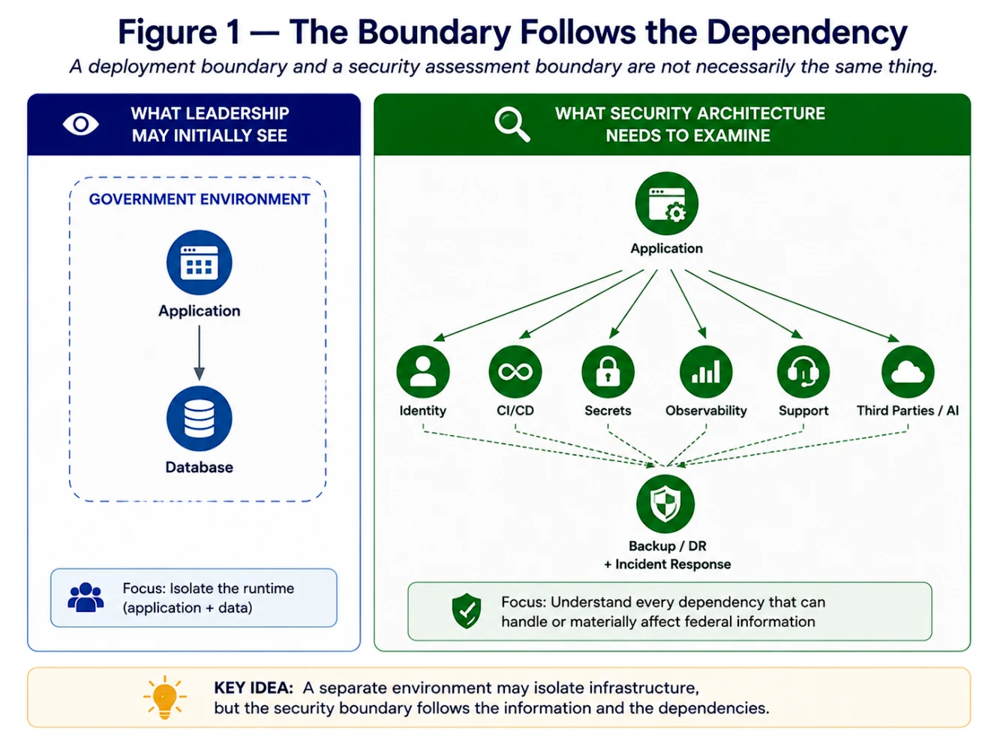
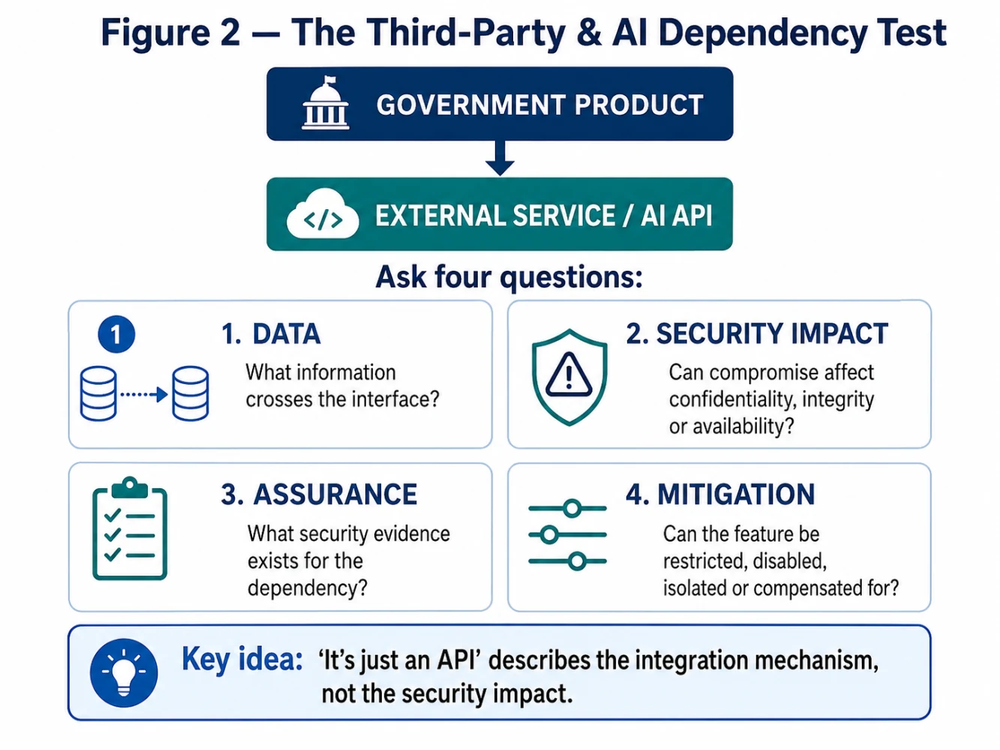
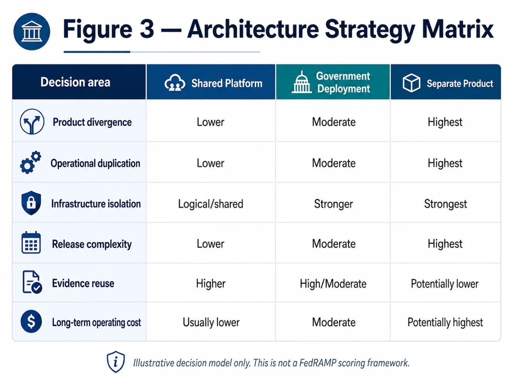

Why moving your SaaS product into a government cloud does not automatically create a smaller security boundary
The conversation changes quickly once leadership decides:
Yes, the opportunity is real.
Yes, government-grade assurance applies.
Yes, we want to proceed.
The next question often sounds deceptively simple:
“Can we just put the government customer into a separate environment and keep the FedRAMP scope small?”
I understand why that idea is attractive.
Separate cloud account.
Separate database.
Perhaps a government-specific region.
Draw a neat box around it.
Call it the government environment.
Problem solved.
Except there is one uncomfortable question:
What else does that box depend on?
So I started following the dependencies.
Source code.
CI/CD.
Identity.
Secrets.
Logging.
Support.
Third-party SaaS.
AI APIs.
Backups.
Incident response.
Suddenly the architecture diagram stopped looking like an isolated box.
And that is where I believe an important misconception about government-ready SaaS begins.
Hosting location is not the same thing as security scope
FedRAMP's 2026 Minimum Assessment Scope takes a fairly direct approach.
A provider must identify the information resources that are likely to:
- handle federal customer data, or
- affect the confidentiality, integrity or availability of that federal customer data. [1]
Those resources collectively form the cloud service offering being assessed.
At the same time, FedRAMP explicitly says the purpose of Minimum Assessment Scope is to avoid unnecessary review of components that do not materially affect the offering's security. [1]
That distinction matters.
It means neither of these statements is automatically correct:
“Everything in the company becomes FedRAMP scope.”
Nor:
“Only the resources in our government cloud account are FedRAMP scope.”
The more useful question is:
Which resources can actually handle—or materially affect—the federal customer data and service?
That is an architecture question.
Not a geography question.
Not an account-number question.
And certainly not a PowerPoint-box question.

Consider LearnSphere again
In Articles 1 and 2, I used a fictional mid-market EdTech company called LearnSphere.
Let's continue the scenario.
LearnSphere has decided that a federal opportunity justifies pursuing FedRAMP.
The architectural proposal is straightforward:
“Deploy LearnSphere Federal into an isolated government environment.”
The application and database are separated.
So far, so good.
Then the architecture review begins.
Source code
The government application is built from the same Git repositories as the commercial service.
CI/CD
The same deployment platform can publish releases into both environments.
Identity
Administrators authenticate through the corporate identity provider.
Secrets
Deployment automation consumes a centrally managed secrets platform.
Observability
Operational telemetry feeds into enterprise monitoring.
Customer support
The same engineering and support organisation troubleshoots both products.
Security operations
The same incident-response team responds to both environments.
AI
One product feature calls an external model API.
Resilience
Backup and disaster-recovery orchestration depends upon central enterprise services.
Now ask the important question:
Did LearnSphere create an isolated security operating model—or merely an isolated runtime?
Those are not the same thing.
The eight dimensions I would examine before approving an enclave
I would not start by asking whether the organisation has enough cloud accounts.
I would use an 8-Dimension Product Boundary Test.
1 — Data
Start with the information itself.
Ask:
- What federal information enters the product?
- Where is it stored?
- Where is it replicated?
- Where do backups live?
- Does sensitive information enter logs?
- Does telemetry leave the environment?
- Are files copied to support systems?
- Do AI prompts contain customer information?
- Does metadata itself reveal information about the customer?
FedRAMP's current rules require providers to clearly identify and explain information flows for resources within the cloud service offering. [1]
The first principle is simple:
Follow the data before you follow the infrastructure.
2 — Identity and privileged access
A dedicated government account does little if uncontrolled identities can administer it.
Ask:
- Which IdP authenticates government users?
- Which IdP authenticates administrators?
- How is privileged access approved?
- Are administrator populations shared?
- How are personnel provisioned and removed?
- What happens during emergency access?
- Can support personnel access customer data?
- Can commercial automation identities alter government resources?
Identity often becomes one of the least visible connections between supposedly separate environments.
And from a security perspective, an administrator who can change a service may matter as much as the server on which that service runs.
3 — Code and software supply chain
Now follow the build.
Does the federal application use:
- the same source repository?
- the same base images?
- the same dependencies?
- the same package repositories?
- the same artifact store?
- the same signing mechanisms?
- the same vulnerability-management processes?
Sharing a codebase is not inherently a problem.
In fact, maintaining one well-secured product can sometimes be preferable to maintaining two drifting versions.
The risk appears when leadership believes:
“The government environment is isolated.”
while a compromise in the shared software-delivery system could still materially affect it.
The question is not:
“Is the source repository outside the cloud account?”
It is:
“What security impact could compromise of this resource have on the government service?”
4 — CI/CD and deployment
This is where many architecture boundaries become more porous than they appear.
Ask:
- Which runners build the software?
- Which services deploy it?
- Which identities can change infrastructure?
- Who can modify Terraform or equivalent IaC?
- Which secrets are used during deployment?
- Can commercial and federal deployment paths affect one another?
- How are releases approved?
- Can an emergency commercial release unintentionally alter the government service?
A separate runtime may still share the same delivery plane.
That does not automatically make the design unacceptable.
But the dependency needs to be understood, secured and evidenced.
5 — Observability
Logging is often treated as a security control.
It is.
But it is also an information flow.
Ask:
- Where are logs sent?
- What information do they contain?
- Where are traces stored?
- Does APM leave the environment?
- Which staff can search those records?
- Does an external SaaS monitoring provider receive federal customer data or metadata?
- Can the central SIEM affect the availability or confidentiality of the service?
A team can carefully isolate application data and then accidentally send sensitive context into a commercial observability platform.
The boundary discussion therefore has to include telemetry, not just transactions.
6 — Third parties and AI: “It's just an API” is not a boundary analysis
This is where modern SaaS architecture makes the discussion particularly interesting.
Imagine LearnSphere adds an AI teaching assistant.
The main SaaS platform is inside its government-ready architecture.
But the feature works like this:
GOVERNMENT USER
↓
LEARNSPHERE
↓
EXTERNAL LLM API
↓
MODEL PROVIDER
At first glance, the model provider appears outside the product.
After all:
“We only make an HTTPS API call.”
But what actually travels through that call?
A prompt?
Student information?
Agency information?
System instructions?
Documents?
Metadata?
And what happens if that service is unavailable, compromised or behaves unexpectedly?
FedRAMP's current Minimum Assessment Scope rules require providers to address applicable third-party information resources when those resources meet the scope criteria. Providers must document their use and configuration, justification, mitigations and compensating controls. [1]
Notice what the rule does not say.
It does not say:
“Any external API automatically fails FedRAMP.”
Nor does it say:
“If the vendor isn't FedRAMP Certified, your application is automatically rejected.”
The more defensible conclusion is:
An external dependency cannot be dismissed simply because the connection is an API.
Its role must be understood in terms of information and security impact.
This is particularly important for AI.
A product leader may see:
AI feature.
A security architect needs to see:
information flow + third-party dependency + availability dependency + data-use terms + model behaviour + operational monitoring.
That is a much richer risk discussion.

7 — Operations and incident response
Architecture diagrams frequently focus on technology.
Incidents introduce humans.
Ask:
- Who receives the alert at 2 a.m.?
- Who investigates?
- Which administrator can access production?
- Which tools do responders use?
- Does the commercial NOC participate?
- Are support engineers offshore or globally distributed?
- Can incident responders access customer data?
- How is emergency access audited?
- Can the organisation reconstruct what happened afterward?
This matters because an environment is not operated by rectangles and arrows.
It is operated by people, processes and privileges.
A security boundary that ignores its operating model is incomplete.
8 — Resilience and recovery
Finally, break the system.
Not literally.
Architecturally.
Assume the primary environment disappears.
What happens?
- Where are backups?
- Who controls them?
- Where are restore credentials?
- What orchestration performs recovery?
- Are DR resources part of the same security model?
- Are external dependencies available during a regional failure?
- Does recovery rely on commercial infrastructure that was never considered during scoping?
A service that can run independently but cannot recover independently may be less isolated than the original architecture diagram suggests.
But there is another side to this argument
At this point, someone may reasonably conclude:
“Fine. Then let's separate everything.”
Separate repositories.
Separate pipelines.
Separate identity.
Separate telemetry.
Separate staff.
Separate infrastructure.
Separate support.
Separate DR.
That would certainly create a clearer separation.
It may also create something else:
a second product company.
And that introduces a different kind of risk.
The hidden economics of product divergence
Imagine maintaining:
Commercial LearnSphere
and
LearnSphere Federal.
Initially, the difference is infrastructure.
Twelve months later, differences begin appearing elsewhere.
Different dependency versions.
Different release dates.
Different features.
Different configuration.
Different testing.
Different vulnerability remediation.
Different observability.
Different support procedures.
Different DR exercises.
Different documentation.
Eventually, a critical vulnerability appears.
Commercial receives the patch immediately.
Federal requires additional testing because its release path has drifted.
The environment created to make security easier has now created a second security challenge:
product divergence.
That leads to one of the central principles I would ask an executive team to consider:
The smallest assessment boundary is not necessarily the lowest-risk operating model.
And:
The cleanest architecture diagram is not necessarily the cheapest product to sustain.
Interestingly, federal policy recognises this tension
OMB M-24-15 explicitly says FedRAMP should avoid promoting unnecessary division between commercially focused and government-focused cloud instances.
The memorandum says that, in general, federal agencies should use the same infrastructure that providers rely upon for their commercial customer base, supporting both security and agility. [2]
That is a significant policy signal.
But it is easy to misread.
It does not mean:
“Every government customer should share the exact same application tenant as commercial customers.”
It does not eliminate:
data isolation,
access control,
security categorisation,
configuration,
risk decisions,
or customer-specific requirements.
Rather, I read the strategic direction as:
Do not create government-specific infrastructure merely because government is involved. Create separation where the risk and customer requirements justify it.
That is a very different architecture philosophy.
So which model should you choose?
I see three broad approaches.
Pattern 1 — Secure shared commercial platform
Government and commercial customers use the same core production platform, with appropriate tenant isolation and security controls.
Potential advantages
- One codebase
- One release train
- Security improvements benefit every customer
- Less product divergence
- Greater evidence reuse
- Lower duplicated engineering effort
Key challenge
The shared platform must be capable of satisfying the government's required security properties and the agency's risk tolerance.
Logical isolation needs to be credible—not merely claimed.
Pattern 2 — Dedicated government deployment
The codebase and much of the engineering model remain shared, but the government service is deployed into a dedicated environment or landing zone.
Potential advantages
- Stronger infrastructure and data separation
- Customer-specific configurations
- Easier separation of certain information flows
- Potentially simpler explanation of some responsibilities
Key challenge
Teams must identify what remains shared:
identity,
CI/CD,
repositories,
security tooling,
support,
third parties,
AI,
and operations.
This is often the most misunderstood model.
Pattern 3 — Separate government product
The organisation creates substantial separation across product, infrastructure and operations.
Potential advantages
- Strong organisational and architectural isolation
- Greater ability to support unique government requirements
- Reduced coupling with some commercial systems
Key challenge
You are no longer only paying for infrastructure separation.
You may be funding:
another release train,
another operational model,
another vulnerability programme,
another DR capability,
another support model,
and eventually another technical-debt portfolio.
That can be appropriate.
But it should be a deliberate business strategy, not an accidental compliance outcome.

What about control inheritance?
Another reason the “build everything separately” approach can become inefficient is that FedRAMP is explicitly designed to support reusable assurance.
Where the cloud service relies on another FedRAMP Certified service, the provider may be able to inherit the underlying implementation and assessment rather than reassessing the entire underlying service. The Minimum Assessment Scope then focuses on the relevant configuration and usage. [1]
That is a powerful architectural idea.
Instead of asking:
“How much infrastructure can we own?”
ask:
“Which trustworthy capabilities can we deliberately inherit?”
The shared-responsibility conversation then becomes much clearer:
Inherited
What does the underlying provider operate and demonstrate?
Shared
What must we configure or manage correctly?
Provider-owned
What remains entirely our responsibility at the product and application layer?
Good FedRAMP architecture is not necessarily architecture with the fewest dependencies.
It is architecture where dependencies are intentional, understood and defensible.
And this is where I would challenge the CTO and CISO together
Before approving an enclave, I would ask twelve questions.
1.
What information are we actually trying to isolate?
2.
Which resources can materially affect that information?
3.
What identity systems administer the environment?
4.
What pipeline can change production?
5.
What source and supply-chain systems create the software?
6.
Where do logs and telemetry go?
7.
Which third parties process or influence the service?
8.
What AI capabilities create additional information flows?
9.
Who operates and supports the product?
10.
What does recovery depend upon?
11.
What controls can we legitimately inherit?
12.
What will this architecture cost to maintain three years from now—not simply to assess this year?
If those questions cannot be answered, I would hesitate to approve the statement:
“The government environment is isolated.”
One thing I would not do
I would not begin by prescribing a universal technical architecture.
For example:
- “Every federal tenant requires its own encryption key.”
- “Every federal workload must use dedicated Kubernetes nodes.”
- “Every government service needs a separate SIEM.”
- “All AI must be self-hosted.”
- “Everything must run in GovCloud.”
Those may be good solutions in particular architectures.
They are not a substitute for risk analysis.
Current FedRAMP rules themselves increasingly make room for security decisions, implementation rationale, validation and risk-based use of technologies rather than assuming one implementation pattern for every cloud service. [3]
That is precisely why architecture has to follow the customer, data, impact and operating model.
And don't confuse machine-readable assurance with automated architecture approval
There is another misconception worth clearing up.
FedRAMP 2026 is absolutely moving toward more machine-readable certification information.
The current rules require providers to supply JSON documents where FedRAMP publishes an applicable schema, and the Security Decision Record is intended to be maintained in both human-readable and JSON form. [3]
But that does not mean a provider can create an OSCAL file, connect it to OPA or Kyverno, and receive an automated FedRAMP verdict.
In fact, FedRAMP itself acknowledged that OSCAL adoption had remained limited through 2025, despite the programme's broader machine-readable ambition. [4]
Automation is increasingly important.
So is human security judgment.
The goal is not:
automate the paperwork.
It is:
make important security decisions continuously demonstrable.
That will become increasingly important in the next article.
What does this mean for leadership?
CEO / CRO
Ask:
Are we creating a government capability—or accidentally creating a second company to win one contract?
CFO
Ask:
What is the recurring operating cost of this architecture after the certification project ends?
CTO
Ask:
What does the dedicated environment genuinely isolate, and which engineering dependencies remain shared?
CISO
Ask:
Can we explain why every security-relevant resource is inside or outside the assessment scope?
Product
Ask:
Which government-specific requirements deserve product capabilities, and which justify a separate offering?
Platform / SRE
Ask:
Can we operate, patch, observe and recover the design without creating an orphan environment?
Engineering
Ask:
Will government customers run the same secure product—or an increasingly divergent fork?
GRC / Assurance
Ask:
Can the evidence describe the real operating architecture rather than the architecture we wish we had?
What the enclave question really taught me
At first, the question appeared straightforward:
“How do we keep the FedRAMP boundary small?”
I now think that can be the wrong optimisation target.
The better question may be:
“What is the smallest architecture we can defend without creating an operating model we cannot sustainably secure?”
Those are different objectives.
One optimises the assessment.
The other optimises the product.
A strong security architecture has to do both.
So before drawing another box labelled:
Government Environment
I would ask:
If we removed that box from the diagram, could we still explain exactly where federal information travels, what can affect it, who can change it, what dependencies it trusts, and how it recovers?
If the answer is no—
we may not yet have an isolated product.
We may simply have isolated infrastructure.
And that is the FedRAMP Enclave Myth I think technology leaders need to understand.
Next in the series
Before You Fund FedRAMP: From Certification Project to Sustainable Operating Model
What executive sponsorship, engineering capacity, evidence automation, assessment effort and recurring investment does government-grade assurance actually require?
References
[1] FedRAMP — Minimum Assessment Scope, Consolidated Rules for 2026. Defines information resources, information flows and applicable third-party resource treatment.
[2] Office of Management and Budget — Memorandum M-24-15, Modernizing the Federal Risk and Authorization Management Program, Section VI: Continuous Monitoring. Addresses cloud agility and avoiding unnecessary government/commercial infrastructure separation.
[3] FedRAMP — Security Decision Record and FedRAMP Certification, Consolidated Rules for 2026. Defines the new provider security-decision record and structured machine-readable certification materials.
[4] FedRAMP — RFC-0024, Rev5 Machine-Readable Packages. Discusses OSCAL, machine-readable authorization information and historical adoption.
References verified August 14, 2026. FedRAMP is actively transitioning to the Consolidated Rules for 2026. Providers should verify applicable rules, certification class, effective dates and agency-specific requirements before making implementation decisions.
Views are personal and intended for education and strategic discussion. This article does not constitute legal, procurement or certification advice.